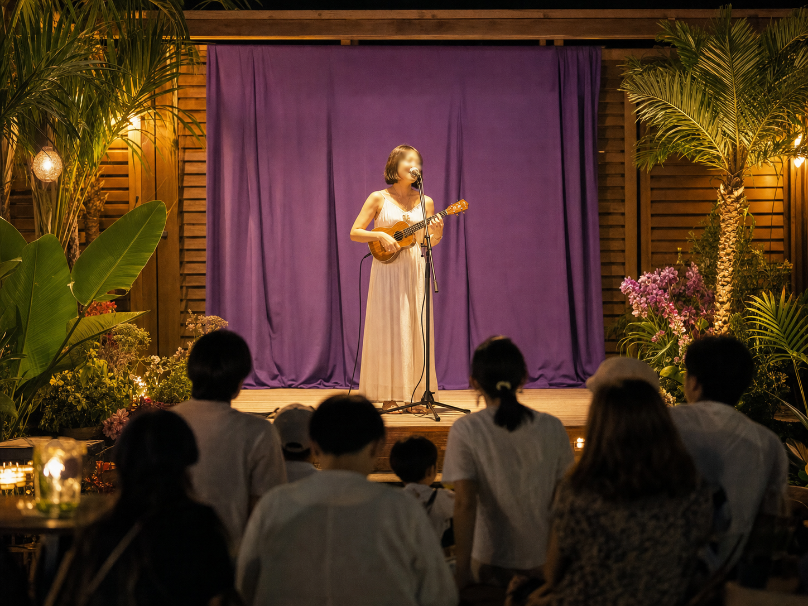

歌・演奏・トークをひとつに
歌手、楽器奏者、ラジオパーソナリティ。複数の表現を組み合わせ、イベントの目的や客層に合わせて柔軟に構成します。
About Ayuna
沖縄を拠点に、歌手としてのライブ・イベント出演、ラジオパーソナリティ、ウクレレ・サンレレ演奏を通じて、会場や番組にあたたかな一体感を生み出します。
子ども向けイベントから地域のお祭り、企業催事まで。場の空気を感じながら、歌・演奏・トークを組み合わせた時間をお届けします。英語教室も開講準備中です。
紫あゆな
プロフィールを見るOur Strengths
歌手、楽器奏者、ラジオパーソナリティ。複数の表現を組み合わせ、イベントの目的や客層に合わせて柔軟に構成します。
ウクレレや沖縄生まれのサンレレの音色とともに、世代を問わず自然に笑顔が生まれるステージを目指します。
地域・教育・ファミリーイベントにも対応。聴くだけでなく、手拍子や歌で参加できる心の距離が近い時間をつくります。
Services

地域イベント、企業催事、子ども向け企画などへのライブ出演。
親しみやすい語り口で、番組やゲストの魅力を引き出します。
やさしく明るい音色で、会場を心地よい空気に包みます。